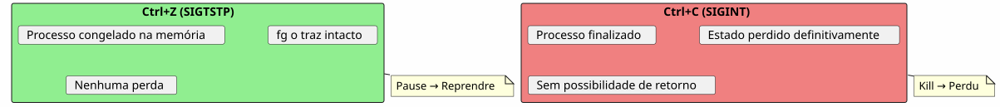
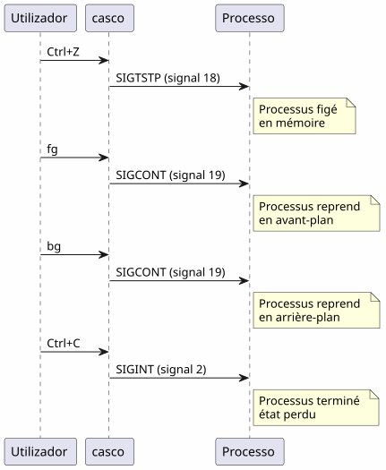

O super tip do comando fg: quando Ctrl+Z salva sua sessão de terminal
Publié le 18 April 2026
- O problema: um terminal ocupado
- Os três comandos indispensáveis
- Cenário 1: o build longo
- Cenário 2: O editor esquecido
- Cenário 3 : O processo opencode suspenso
- Cenário 4: Gerenciar vários trabalhos simultaneamente
- Diferenças entre fg, bg, Ctrl+Z, Ctrl+C e &
- O ciclo de vida completo de um trabalho
- Dicas avançadas
- Armadilhas e erros comuns
- Diagrama resumo
- Por que fg é subestimado
- Memória técnica: os sinais
- Conclusão
- Referências
Você lança`./gradlew build`, o terminal está bloqueado por 3 minutos, e você precisa fazer outra coisa aguardando? Não é necessário abrir uma nova aba.`Ctrl+Z`suspende o processo,`fg`o traz exatamente para onde você o deixou. É a dica Unix mais subestimada do dia a dia de um desenvolvedor.
- toc
-
[]
O problema: um terminal ocupado
Todo desenvolvedor já passou por essa situação:
$ ./gradlew build
> Building...O terminal está bloqueado. Você não pode mais digitar nenhum comando. E você precisa consultar um arquivo, executar um`git status`, ou verificar uma porta ocupada.
Failed to generate image: PlantUML preprocessing failed: [From <input> (line 6) ] @startuml skinparam backgroundColor #FEFEFE actor Développeur as dev participant "Terminal" as term participant "Gradle ^^^^^ Syntax Error? (Assumed diagram type: sequence) @startuml skinparam backgroundColor #FEFEFE actor Développeur as dev participant "Terminal" as term participant "Gradle ( processo )" as gradle dev -> term : ./gradlew build term -> gradle : Lance le build gradle -> term : Occupe le terminal\n(pas de prompt) dev -> term : veut taper une commande term --> dev : ❌ Terminal bloqué note right of dev Le développeur est paralysé pendant toute la durée du build end note @enduml
A maioria dos desenvolvedores abre um novo terminal. Mas existe uma solução mais elegante, mais rápida e nativa: o gerenciamento de jobs.
Os três comandos indispensáveis
Ctrl+Z — Suspender (SIGTSTP)
`Ctrl+Z`envia o sinal`SIGTSTP`ao processo em primeiro plano. O processo ésuspenso— não morto — e o terminal recupera o seu prompt.
$ ./gradlew build
> Building...
^Z
[1]+ Stoppé ./gradlew build
$O número entre colchetes`[1]`é onúmero do emprego. Le `+`indica o trabalho padrão
fg — Retomar em primeiro plano
`fg`Traz o trabalho suspenso para o primeiro plano. O processo retoma exatamente onde havia parado.
$ fg
./gradlew build
> Building... (reprend où il en était)Com um número de trabalho específico :
$ fg %2bg — Retomar em segundo plano
`bg`Retoma o processo sem bloquear o terminal. Ideal para builds longos.
$ bg
[1]+ ./gradlew build &
$Le `&`no final significa que o processo está sendo executado em segundo plano.
jobs — Listar os jobs do shell
$ jobs
[1]- Stoppé vim README.md
[2]+ En cours ./gradlew buildFailed to generate image: PlantUML preprocessing failed: [From <input> (line 5) ] @startuml skinparam backgroundColor #FEFEFE skinparam defaultFontName sans-serif state "Primeiro plano ^^^^^ Syntax Error? (Assumed diagram type: sequence) @startuml skinparam backgroundColor #FEFEFE skinparam defaultFontName sans-serif state "Primeiro plano (terminal bloqueado)" as fg #LightCoral state "Suspenso\n(Ctrl+Z)" as stopped #LightYellow state "Fundo\n(bg)" as bg_ #LightGreen [*] --> fg : Lance une commande fg --> stopped : Ctrl+Z\n(SIGTSTP) stopped --> fg : fg\nreprend en avant-plan stopped --> bg_ : bg\nreprend en arrière-plan bg_ --> fg : fg\nramène en avant-plan fg --> [*] : Commande terminée note right of stopped Le processus est figé mais _pas_ tué end note note left of bg_ Le terminal est libre le build continue end note @enduml
Cenário 1: o build longo
É o caso de uso mais comum. Você inicia um build Gradle, o terminal está bloqueado, e você precisa fazer outra coisa.
Failed to generate image: PlantUML preprocessing failed: [From <input> (line 8) ] @startuml skinparam backgroundColor #FEFEFE autonumber actor Développeur as dev participant "Terminal" as term participant "Gradle" as gradle database "Estado ^^^^^ Syntax Error? (Assumed diagram type: sequence) @startuml skinparam backgroundColor #FEFEFE autonumber actor Développeur as dev participant "Terminal" as term participant "Gradle" as gradle database "Estado processo" as state dev -> term : ./gradlew build term -> gradle : Lance le build gradle -> state : En cours (FG) dev -> term : Ctrl+Z term -> state : Suspendu (job [1]) term --> dev : Prompt libre $ dev -> term : git status term --> dev : working tree clean dev -> term : fg term -> state : Reprend (FG) gradle --> dev : Build réussi ✓ note right of state Le processus Gradle n'a jamais été tué Il reprend exactement où il s'était arrêté end note @enduml
passo a passo
$ ./gradlew build
> Building...
^Z
[1]+ Stoppé ./gradlew build
$ git status
On branch main
nothing to commit, working tree clean
$ fg
./gradlew build
> Building...
BUILD SUCCESSFUL in 2m 34sCenário 2: O editor esquecido
Você está em`vim`, você precisa consultar outro arquivo sans sair`vim`.
# Dans vim, en mode commande :
:shell
$ cat /path/to/other/file.txt
$ exit
# Retour dans vimMas é pesado. Com`Ctrl+Z`, é imediato:
# Dans vim, n'importe quel moment :
Ctrl+Z
[1]+ Stoppé vim README.md
$ cat /path/to/other/file.txt
# ... lire le fichier ...
$ fg
vim README.md
# Retour exact là où on en était, curseur en place
NOTA:`vim`restaura perfeitamente o seu estado após um`fg`: posição do cursor, conteúdo do buffer, histórico de desfazer — tudo está preservado.
Cenário 3 : O processo opencode suspenso
Este é o cenário que motivou este artigo. Você utiliza`opencode`(ferramenta CLI para pilotar um LLM no seu código), e o processo está suspenso.
Failed to generate image: PlantUML preprocessing failed: [From <input> (line 7) ] @startuml skinparam backgroundColor #FEFEFE skinparam defaultFontName sans-serif skinparam componentStyle rectangle actor Développeur as dev participant "opencode ^^^^^ Syntax Error? (Assumed diagram type: sequence) @startuml skinparam backgroundColor #FEFEFE skinparam defaultFontName sans-serif skinparam componentStyle rectangle actor Développeur as dev participant "opencode (agente LLM)" as agent participant "carapaça" as shell participant "git" as git dev -> agent : Session active agent -> agent : Tour de parole\ndu LLM en cours note over agent Ctrl+Z arrive en plein milieu d'une analyse de code end note dev -> agent : Ctrl+Z agent -> shell : Suspendu (job [1]) dev -> git : git diff git --> dev : changements visibles dev -> shell : fg shell -> agent : Reprend (job [1]) agent --> dev : Reprend exactement\nl'analyse en cours note right of agent Aucune perte de contexte Le LLM reprend sa réponse exactement où il en était end note @enduml
$ opencode
# ... session en cours, LLM analyse le code ...
^Z
[1]+ Stoppé opencode
$ git diff HEAD~1
# vérifier les changements récents
$ fg
opencode
# Le LLM reprend là où il s'était arrêtéA vantagem é dupla :
-
Sem perda de contexto: a sessão LLM, o histórico de conversa, os arquivos abertos — tudo está preservado
-
Sem reinicialização: não é necessário reiniciar o opencode, recarregar o contexto, explicar novamente o problema ao LLM
Cenário 4: Gerenciar vários trabalhos simultaneamente
fg et `bg`aceitam um número de job para direcionar um processo específico quando vários estão suspensos.
$ vim config.yml
^Z
[1]+ Stoppé vim config.yml
$ ./gradlew test
^Z
[2]+ Stoppé ./gradlew test
$ htop
^Z
[3]+ Stoppé htop
$ jobs
[1] Stoppé vim config.yml
[2]- Stoppé ./gradlew test
[3]+ Stoppé htop
$ fg %2
./gradlew test
# Le build reprend en avant-plan
$ bg %3
[3] htop &
# htop reprend en arrière-planFailed to generate image: PlantUML preprocessing failed: [From <input> (line 13) ]
@startuml
skinparam backgroundColor #FEFEFE
rectangle "Trabalhos suspensos" as jobs #LightYellow {
card "[1] vim config.yml" as j1
card "[2] ./gradlew test" as j2
card "[3] htop" as j3
}
rectangle "Ações" as actions #LightGreen {
card "fg %2\n→ primeiro plano" as a1
card "bg %3
→ fundo" as a2
^^^^^
Syntax Error? (Assumed diagram type: activity)
@startuml
skinparam backgroundColor #FEFEFE
rectangle "Trabalhos suspensos" as jobs #LightYellow {
card "[1] vim config.yml" as j1
card "[2] ./gradlew test" as j2
card "[3] htop" as j3
}
rectangle "Ações" as actions #LightGreen {
card "fg %2\n→ primeiro plano" as a1
card "bg %3
→ fundo" as a2
card "fg %1\n→ primeiro plano" as a3
}
jobs --> actions : fg/bg + numéro de job
actions --> j2 : Reprend
actions --> j3 : En arrière-plan
note bottom of jobs
Chaque job conserve
son état exact
entre les suspend/resume
end note
@enduml
Resumo dos comandos dos trabalhos
| pedido | efeito | Exemplo |
|---|---|---|
|
Suspende o processo em primeiro plano |
Envio de`SIGTSTP` |
|
Retoma o job padrão em primeiro plano |
|
|
Retoma o job n em primeiro plano |
|
|
Retome o trabalho padrão em segundo plano |
|
|
Retoma o job n em segundo plano |
|
|
Lista os jobs do shell corrente |
|
|
Termine o job n |
|
Diferenças entre fg, bg, Ctrl+Z, Ctrl+C e &
Muitos desenvolvedores confundem esses mecanismos. Eis um esclarecimento decisivo.
Failed to generate image: PlantUML preprocessing failed: [From <input> (line 15) ]
@startuml
skinparam backgroundColor #FEFEFE
skinparam defaultFontName sans-serif
rectangle "**Ctrl+Z**\nSIGTSTP" as ctrlz #LightYellow {
card "Suspende o processo\n(ele ainda está na memória)\nUtilizável com fg/bg" as c1
}
rectangle "**Ctrl+C**\nSIGINT" as ctrlc #LightCoral {
card "Finaliza o processo\n(sem possibilidade de retorno)\nPerda de todo o estado" as c2
}
rectangle "**& **\n(fundo)" as ampersand #LightGreen {
card "Inicie diretamente
em segundo plano
^^^^^
Syntax Error? (Assumed diagram type: activity)
@startuml
skinparam backgroundColor #FEFEFE
skinparam defaultFontName sans-serif
rectangle "**Ctrl+Z**\nSIGTSTP" as ctrlz #LightYellow {
card "Suspende o processo\n(ele ainda está na memória)\nUtilizável com fg/bg" as c1
}
rectangle "**Ctrl+C**\nSIGINT" as ctrlc #LightCoral {
card "Finaliza o processo\n(sem possibilidade de retorno)\nPerda de todo o estado" as c2
}
rectangle "**& **\n(fundo)" as ampersand #LightGreen {
card "Inicie diretamente
em segundo plano
Terminal livre imediatamente" as c3
}
rectangle "**fg**\n(primeiro plano)" as fg_ #SkyBlue {
card "Traga um trabalho
suspenso em primeiro plano
Terminal ocupado" as c4
}
rectangle "**bg**
(background)" as bg_ #Lavender {
card "Retoma um trabalho suspenso em segundo plano\nTerminal livre" as c5
}
ctrlz -right-> fg_ : fg pour reprendre
ctrlz -right-> bg_ : bg pour continuer\nen arrière-plan
ctrlc -right-> c2 : Pas de retour\nprocessus tué
note bottom of ctrlz
Le processus est **figé**
mais **pas tué**
end note
note bottom of ampersand
Alternative : lancer
./gradlew build &
directement en arrière-plan
end note
@enduml
| Atalho/Comando | Sinal | Efeito | Voltar atrás? |
|---|---|---|---|
|
|
Suspender o processo (congelado, na memória) |
Sim:`fg` ou |
|
|
Mate o processo (terminado) |
Não : processo destruído |
|
|
Mate o processo + core dump |
Não : processo destruído |
|
— |
Execute em segundo plano diretamente |
`fg`para trazê-lo de volta para o primeiro plano |
Ctrl+Z`énão destrutivo. O processo está congelado tal como está, na memória. Você pode retomar imediatamente com`fg. É um pausa, não um parada.
|
O ciclo de vida completo de um trabalho
Failed to generate image: PlantUML preprocessing failed: [From <input> (line 8) ] @startuml skinparam backgroundColor #FEFEFE skinparam defaultFontName sans-serif title Ciclo de vida completo de um job shell state "Inexistente" as none state "Primeiro plano\n(ocupa o terminal)" as foreground #LightCoral state "Suspenso ^^^^^ Syntax Error? (Assumed diagram type: state) @startuml skinparam backgroundColor #FEFEFE skinparam defaultFontName sans-serif title Ciclo de vida completo de um job shell state "Inexistente" as none state "Primeiro plano\n(ocupa o terminal)" as foreground #LightCoral state "Suspenso (Ctrl+Z / SIGTSTP)" as suspended #LightYellow state "plano de fundo (bg ou &)" as background #LightGreen state "Concluído (código de saída 0)" as done #LightGray [*] --> none none --> foreground : tape une commande foreground --> suspended : Ctrl+Z foreground --> done : fin normale suspended --> foreground : fg suspended --> background : bg suspended --> done : kill %n background --> foreground : fg background --> done : fin normale\n(en arrière-plan) background --> suspended : Ctrl+Z\n(si fg puis Ctrl+Z) done --> [*] note right of suspended L'état suspendu est le pivot de tout le système de jobs end note @enduml
Dicas avançadas
fg com o trabalho mais recente e a alternância
fg`sem argumento traz o trabalho marcado+(o mais recente). Mas você também pode usar%-`pour direcionar o trabalho anterior :
$ vim file1.txt
^Z
[1]+ Stoppé vim file1.txt
$ vim file2.txt
^Z
[2]+ Stoppé vim file2.txt
$ fg # ramène job [2] (le plus récent)
$ fg %- # ramène job [1] (le précédent)matar um trabalho corretamente
$ jobs
[1]- Stoppé vim config.yml
[2]+ Stoppé ./gradlew test
$ kill %2 # envoie SIGTERM au job 2
$ kill -9 %1 # envoie SIGKILL au job 1 (force)désown : desanexar do shell
disown`Remover um trabalho da tabela de trabalhos do shell. O processo continua em execução, mas não pode mais ser trazido de volta com`fg:
$ ./gradlew build &
[1] 12345
$ disown %1
# Le processus continue mais n'est plus lié au shell
# Ça survives à la fermeture du terminalCombinar com nohup para os processos longos
Para que um processo sobreviva ao encerramento do terminal :
$ nohup ./gradlew build &
[1] 12345
$ disown %1
# Le build continue même si vous fermez le terminalFailed to generate image: PlantUML preprocessing failed: [From <input> (line 8) ]
@startuml
skinparam backgroundColor #FEFEFE
skinparam defaultFontName sans-serif
rectangle "fg" as fg_ #SkyBlue {
card "Traga o trabalho\no mais recente (+)" as f1
card "Direcione um trabalho
específico: fg %n" as f2
^^^^^
Syntax Error? (Assumed diagram type: activity)
@startuml
skinparam backgroundColor #FEFEFE
skinparam defaultFontName sans-serif
rectangle "fg" as fg_ #SkyBlue {
card "Traga o trabalho\no mais recente (+)" as f1
card "Direcione um trabalho
específico: fg %n" as f2
card "Altere : fg %-" as f3
}
rectangle "matar %n" as kill_ #LightCoral {
card "SIGTERM (limpo)" as k1
card "SIGKILL -9 (forçar)" as k2
}
rectangle "repudiar" as disown #Lavender {
card "Desacoplado do shell
(sobrevive à desconexão)" as d1
}
rectangle "nohup + &" as nohup_ #LightGreen {
card "Processo imunizado
contra SIGHUP
(sobrevive ao fechamento
do terminal)" as n1
}
fg_ -right-> kill_ : si faut\nterminer
kill_ -right-> disown_ : ou détacher
nohup_ -left-> fg_ : fg ramène en\navant-plan
note bottom of disown_
Après disown, fg ne peut
plus ramener le job
end note
@enduml
Armadilhas e erros comuns
Confundir Ctrl+Z e Ctrl+C
Este é o erro mais frequente.`Ctrl+C`mata o processo.`Ctrl+Z`o suspende. Se você pressiona em`Ctrl+C`por reflexo, todo o estado é perdido — arquivos abertos, sessões LLM, compilações em andamento.

Os trabalhos são locais ao shell
jobs, fg et `bg`funcionam apenas no shell que iniciou os processos. Se você abre um novo terminal, você não verá os trabalhos do outro.
# Terminal 1
$ vim file.txt
^Z
[1]+ Stoppé vim file.txt
# Terminal 2 (nouveau)
$ jobs
# (rien — les jobs sont locaux au shell)Para ver os processos system-wide, utiliza`ps` ou htop:
ps aux | grep vimOs jobs não sobrevivem ao fechamento do shell
Se você fechar o terminal, todos os trabalhos suspensos ou em segundo plano são destruídos. Para que um processo sobreviva, utilize`nohup`+disown:
$ nohup ./gradlew build &
[1] 12345
$ disown %1
# Fermer le terminal → le build continueOs processos interativos e fg
Alguns programas interativos não se portam bem depois de um`Ctrl+Z`+fg. É raro mas acontece :
-
Alguns programas que utilizam sinais (vim, htop, less lidam bem`Ctrl+Z`)
-
Os programas de rede longos (ssh, opencode) geralmente recuperam corretamente
-
Os programas que modificam o terminal (ncurses) podem, às vezes, deixar o terminal num estado inesperado
Em caso de terminal corrompido depois de um`fg`, digite :
resetDiagrama resumo
Failed to generate image: PlantUML preprocessing failed: [From <input> (line 10) ]
@startuml
skinparam backgroundColor #FEFEFE
skinparam defaultFontName sans-serif
skinparam ArrowColor #444444
title "fg — O tip que muda tudo"
rectangle "**Problema**" as problem #LightCoral {
card "Terminal bloqueado
por um processo" as p1
^^^^^
Syntax Error? (Assumed diagram type: activity)
@startuml
skinparam backgroundColor #FEFEFE
skinparam defaultFontName sans-serif
skinparam ArrowColor #444444
title "fg — O tip que muda tudo"
rectangle "**Problema**" as problem #LightCoral {
card "Terminal bloqueado
por um processo" as p1
card "Abrir um novo
terminal = solução pesada" as p2
}
rectangle "**Solução**" as solution #LightGreen {
card "Ctrl+Z → suspender" as s1
card "fg → retoma" as s2
card "bg → em segundo plano" as s3
card "jobs → ver os suspensos" as s4
}
rectangle "**Vantagens**" as advantages #SkyBlue {
card "Sem perda de contexto" as a1
card "Sem reinicialização" as a2
card "Um único terminal basta" as a3
}
problem -right-> solution : "A solução nativa
Unix há 40 anos"
solution -right-> advantages : "Resultado"
note bottom of advantages
fg n'est pas un tips obscur
C'est un mécanisme fondamental
du shell Unix
end note
@enduml
Por que fg é subestimado
A maioria dos desenvolvedores modernos descobre`fg`tarde, ou mesmo nunca. Algumas razões:
-
Os IDEs escondem o terminal: VS Code oferece um terminal integrado, mas as abas múltiplas tornam`fg`menos necessário em aparência
-
As ferramentas gráficas substituem a CLI: os gerenciadores de arquivos, os monitores de sistema, os clientes Git gráficos
-
tmux e screen: esses multiplexadores resolvem o mesmo problema de maneira diferente, mas`fg`é mais simples e sempre disponível
Contudo,`fg`é:
-
Universal: presente em todos os shells POSIX (bash, zsh, fish…)
-
Sem dependência: não é necessário instalar o tmux ou o screen
-
Instantâneo: duas pancadas (
Ctrl+Z`então`fg) para suspender e retomar -
Preservador de contexto: o estado do processo está íntegro
Failed to generate image: PlantUML preprocessing failed: [From <input> (line 6) ]
@startuml
skinparam backgroundColor #FEFEFE
skinparam defaultFontName sans-serif
rectangle "Por que fg é
subestimado?" as why #LightCoral {
^^^^^
Syntax Error? (Assumed diagram type: activity)
@startuml
skinparam backgroundColor #FEFEFE
skinparam defaultFontName sans-serif
rectangle "Por que fg é
subestimado?" as why #LightCoral {
card "IDE com terminal\nmulti-abas" as w1
card "Ferramentas gráficas
que substituem a CLI" as w2
card "tmux/screen
resolvem o problema
de outra forma" as w3
}
rectangle "Por que fg é
superior ?" as superior #LightGreen {
card "Universal : bash,
zsh, fish, sh..." as s1
card "Sem dependência:
sem instalação" as s2
card "Dois golpes :\nCtrl+Z depois fg" as s3
card "Contexto preservado :
zero perda de estado" as s4
}
why -right-> superior : "A simplicidade
sempre vence"
@enduml
Memória técnica: os sinais
Para os curiosos, aqui estão os sinais envolvidos:
| sinal | Nome | Enviado por | efeito |
|---|---|---|---|
2 |
|
|
Interrupção — termina o processo |
3 |
|
|
Encerra com core dump |
18 |
|
|
Interativo — suspende o processo |
19 |
|
|
Continua — retoma um processo suspenso |
15 |
|
|
terminação limpa |
9 |
|
|
Terminação forçada (impossível de interceptar) |
O fluxo completo :

Conclusão
`fg`não é uma dica obscura — é um mecanismo fundamental do shell Unix, disponível desde os anos 70. O fato de a maioria dos desenvolvedores ignorá-lo é um sintoma da nossa época: as IDEs e os multiplexadores nos afastaram das bases.
Mas quando você está em um servidor SSH, em um terminal mínimo ou simplesmente usando`opencode`e o LLM está em pleno trabalho —Ctrl+Z, fg, bg, `jobs`são seus melhores amigos.
_ Ctrl+Z suspende, fg retoma. É o pausa-play do terminal. _
Referências
-
man bash— seção JOB CONTROL -
man signal— lista de sinais POSIX